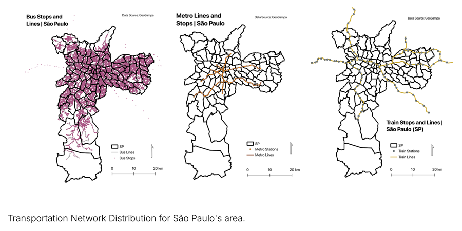
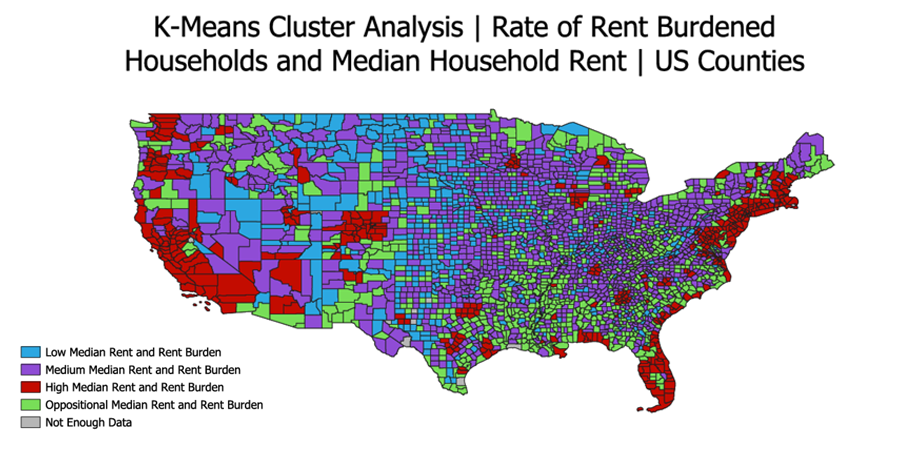
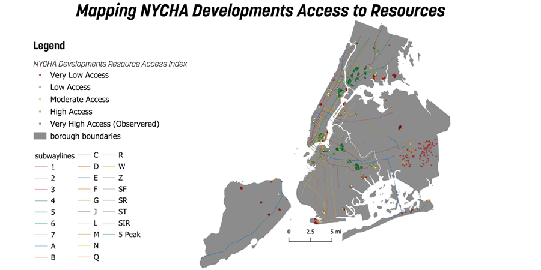
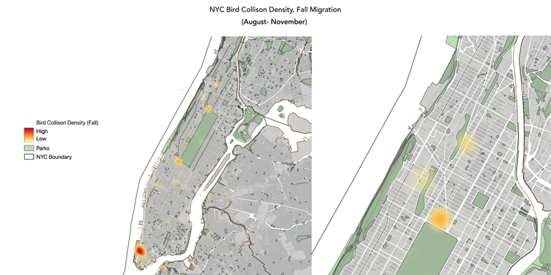
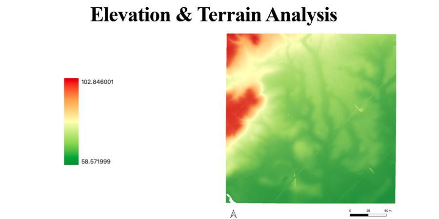
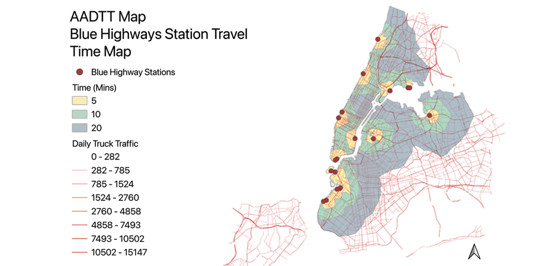

Projects - Spring 2026

This project examines how the spatial distribution of public transportation infrastructure in São Paulo relates to patterns of social vulnerability and urban inequality. Using demographic data from IBGE, social vulnerability indicators from the IPVS dataset, transportation networks from GeoSampa, and population density rasters from WorldPop, the analysis integrates vector and raster workflows to evaluate accessibility across selected municipalities. In QGIS, datasets were standardized and clipped to municipal boundaries, with zonal statistics used to calculate average vulnerability values and transportation network metrics such as line length and stop counts within each area. The study compares five municipalities representing varying socioeconomic conditions, revealing clear disparities between central and peripheral zones. Wealthier areas such as Moema and Alto de Pinheiros exhibit lower vulnerability and access to multimodal transit systems, while more vulnerable areas such as Capão Redondo and Iguatemi rely primarily on bus networks and lack subway or train connectivity. Supporting maps, including population density and vulnerability surfaces (page 5), reinforce these spatial patterns. The results demonstrate that transportation infrastructure is unevenly distributed and closely aligned with socio-economic divides, contributing to longer commute times and reduced access to opportunity in peripheral areas. The project highlights how GIS can be used to quantify and visualize infrastructure inequality and support more equitable urban planning strategies.

This project examines the spatial relationship between rent burden, median rent, and homelessness risk across the contiguous United States. Using ACS 2018–2022 county-level housing data, the analysis calculates the share of renter households spending 30% or more of income on rent, as well as the share spending 50% or more, to identify standard and severe rent burden. In QGIS, selected ACS housing fields are joined to county polygons using GEOIDFQ, cleaned to remove counties with insufficient data, and mapped using graduated choropleth symbology. Median gross rent is mapped separately, then joined with rent burden values to support a K-means clustering workflow. The clustering analysis groups counties by combined rent burden and median rent, revealing areas where both housing costs and affordability stress are high. Results show that high-rent, high-burden counties are concentrated along the coasts and in major metropolitan regions, including areas associated with large homeless populations. The project uses these financial geographies to argue that homelessness is strongly shaped by structural housing market conditions rather than individual behavior alone. While direct county-level homelessness comparison is limited by the use of Continuum of Care geographies, the project provides a clear spatial framework for identifying areas where prevention-focused housing policy may be most urgent.

This project evaluates spatial inequality in access to essential neighborhood resources across New York City public housing developments. Using 2,961 NYCHA building locations, the analysis measures proximity and availability of food retailers, health facilities, parks, and subway stations. In QGIS, 0.25- and 0.5-mile buffers were generated around each building to represent walkable access areas, with the larger buffer approximating a 10-minute walk. Resource availability was quantified using count points in polygon for food and health facilities, while distance to nearest hub analysis was used to calculate straight-line distances to parks and subway stations. Each metric was standardized using min-max normalization to a 0–10 scale and combined into a composite Resource Access Index (RAI) with equal weighting of counts and distances. Results show substantial variation in access, with scores ranging from approximately 2.2 to 7.7 and clusters of low-access buildings concentrated in Staten Island and eastern Queens (pages 5–6). Brooklyn shows the highest average access, while 12.4% of buildings fall below an RAI threshold of 4.0, indicating severe under-service. By integrating multiple spatial measures into a single index, the project provides a replicable framework for identifying underserved communities and informing equitable investment in urban infrastructure and services.

This project analyzes how New York City’s built environment influences migratory bird collision patterns during spring and fall migration seasons. Using dBird collision monitoring data from 2019–2024, the analysis maps reported bird collision points and separates observations into seasonal subsets using date-based attribute filtering. In QGIS, collision points are projected to EPSG:2263 and processed with Kernel Density Estimation to create heatmap surfaces showing concentrations of collision risk. These density rasters are compared across spring and fall migration periods and interpreted alongside parks, building footprints, waterfront areas, and MapPLUTO land use context. The project also incorporates NYC Building Elevation and Subgrade centroid data, filtering buildings with elevation values above 500 feet and overlaying those points with collision hotspots in Manhattan. Results show that collisions cluster most strongly in Lower Manhattan, Midtown, and areas near Bryant Park, Columbus Circle, and waterfront development, where dense built environments intersect with green spaces used by migratory birds. Fall migration patterns appear more spatially concentrated, including notable hotspots near Washington Heights and St. Nicholas Park. By combining point data, raster density surfaces, and building elevation overlays, the project demonstrates how urban design, parks, and high-rise development can shape ecological risk for migratory birds moving through New York City.

This project explores how elevation, land cover, and urban infrastructure influence flood vulnerability in Oxford, England. Using a combination of LiDAR-derived Digital Elevation Model (DEM) data, land cover datasets, river and waterway layers, and OpenStreetMap infrastructure data, the analysis investigates how physical geography and urban form intersect to shape environmental risk. In QGIS, raster-based terrain analysis is used to visualize elevation variation across the study area, identifying low-lying zones near the River Thames and its tributaries where water accumulation is more likely. Additional mapping layers, including transportation networks and built infrastructure, are overlaid to examine how impermeable surfaces and dense development contribute to increased surface runoff and localized flooding. The project also incorporates river corridor mapping to highlight areas where infrastructure and floodplain systems overlap. While the work is largely conceptual and exploratory, it demonstrates how raster visualization, terrain interpretation, and vector overlay can be combined to identify patterns of environmental vulnerability. The findings suggest that flood risk in Oxford is spatially uneven and strongly influenced by the interaction of topography, hydrological systems, and urban development. The project provides a foundation for future analysis that could incorporate flood modeling, quantitative risk assessment, and more detailed hydrological simulation.

This project evaluates the spatial coverage and strategic placement of New York City’s proposed Blue Highways freight network. Using hand-digitized dock locations derived from the NYCEDC Blue Highways Action Plan, the analysis models last-mile delivery accessibility through OpenRouteService (ORS) isochrone mapping, generating 5-, 10-, and 20-minute travel zones for cargo bikes. These service areas are compared against multiple spatial datasets, including NYC zoning (ZoLa), annual average daily truck traffic (AADT), and a composite environmental risk surface based on proximity to polluting infrastructure and vulnerable populations. Results show that while the network has limited geographic coverage, it is strategically positioned along industrial and commercial waterfronts such as Sunset Park, Hunts Point, and Newtown Creek. Overlay analysis reveals that many high-risk areas—particularly in the South Bronx and parts of Brooklyn—fall within station catchments, indicating strong potential for reducing truck-related pollution and congestion. However, significant gaps remain in areas such as Staten Island, eastern Queens, and parts of the Bronx, where accessibility to Blue Highway infrastructure is limited. By integrating network-based accessibility modeling with zoning, traffic, and environmental risk analysis, the project demonstrates how GIS can be used to assess infrastructure equity and inform more targeted expansion of sustainable freight systems across the city.